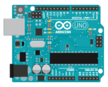

如何添加新设备¶
介绍¶
在scratch-HW中，设备各种单片机, 如: arduino uno, arduino nano 等。 和原scratch的扩展相比, 设备所指的单片机需要在用户在设备界面中单击后才会被加载。
在scratch-gui中添加设备的图片和配置¶
-
根据下面的参数拍摄单片机照片。并保留合适的白色边缘。
Format png Resolution 600x372 Background Color white 你可以根据下图进行制作。最后使用单片机的名称进行命名。 请遵循驼峰格式, 如 :
arduinoLeonardo.png -
将pnd格式图片后转换为svg图片.
Delte the background of the board picture. And crop image along the edge of board, aspect ratio is 108x87, save it. Then crop image‘s aspect ratio to**1x1**, save it.
Visit this website: aconvert.com. Upload the saved pictures, convert it to svg format separately. Remember to select the Resize image option as Change width and Height, set Image size 108x87 and 40x40.
Save the 108x87 piture with name
-illustration.svg, eg : arduinoUno-illustration.svg
Save the 40x40 piture with name
-small.svg, eg : arduinoUno-small.svg -
Pull three pictures to a folder named with the board name. eg :
arduinoUno, move this folder to path :scratch-gui\src\lib\libraries\devices\When you're done, the file structure will look like this :
scratch-gui\src\lib\libraries\devices\ |- arduinoLeonardo\ |- arduinoMega2560\ |- baseToolbox\ |- ... |- <board name>\ |- <board name>.png |- <board name>-illustration.svg |- <board name>-small.svg |- index.jsx -
Configuration in
index.jsx.
In file scratch-gui\src\lib\libraries\devices\index.jsx，You can see that there are already some configuration of devices there. Let's take arduino uno's parameters as an example.
Fist, import the pictures.
import arduinoUnoIconURL from './arduinoUno/arduinoUno.png';
import arduinoUnoConnectionIconURLL from './arduinoUno/arduinoUno-illustration.svg';
import arduinoUnoConnectionSmallIconURL from './arduinoUno/arduinoUno-small.svg';
Then set the configuration.
{
name: 'Arduino Uno',
deviceId: 'arduinoUno',
collaborator: 'arduino',
type: 'arduino',
iconURL: arduinoUnoIconURL,
description: (
<FormattedMessage
defaultMessage="The best board to get started with electronics and coding."
description="Description for the Arduino Uno device"
id="gui.device.arduinoUno.description"
/>
),
featured: true,
disabled: false,
bluetoothRequired: false,
serialportRequired: true,
internetConnectionRequired: false,
launchPeripheralConnectionFlow: true,
useAutoScan: false,
connectionIconURL: arduinoUnoConnectionIconURLL,
connectionSmallIconURL: arduinoUnoConnectionSmallIconURL,
connectingMessage: (
<FormattedMessage
defaultMessage="Connecting"
description="Message to help people connect to their arduino."
id="gui.device.arduino.connectingMessage"
/>
),
baseToolBoxXml: arduinoBaseToolBox,
programMode: ['realtime', 'upload'],
programLanguage: ['block', 'c', 'cpp'],
helpLink: 'https://store.arduino.cc/usa/arduino-uno-rev3'
},
** indicates that this is required.The same below.*
-
name
The display name of this device.
-
deviceId*
The id witch used to load device in scratch-vm.
-
collaborator
This will be displayed in Collaborator bar of the device selection interface.
-
type*
It tells gui witch code generator should be use.
-
iconURL*
Will be displayed in device selection interface.
-
description
This will be displayed in bottom of iconURL of the device selection interface. For multi language we use FormattedMessage here, It will be send to the scratchHW project in translation website. If the translation is not available yet, the content in defaultMessage will be displayed.
-
featured*
This is a internal attribute. It should always set to true.
-
disabled
Set to true to disabled this device selection.
-
bluetoothRequired/serialportRequired/internetConnectionRequired
Set to true to display the connection icon in Requires bar of the device selection interface. These parameters are only used to control the display in the device selection interface, will not affect the actual connection function.
-
launchPeripheralConnectionFlow*
It tells gui open the connection interface after we select the device, recommended to set to true.
-
useAutoScan
This is used to search and connect device automaticly.
-
connectionIconURL*
Will be displayed in device connection coninterface.
-
connectionSmallIconURL*
Will be displayed in the top bar of device connection interface.
-
connectingMessage*
The message to be displayed in device connection interface while connecting. Suggested not to modify it.
-
baseToolBoxXml*
It provide the special toolbox to gui. Suggested not to modify it.
-
programMode*
If the porgram mode is not supported the mode switch will be locked after select the device.
-
programLanguage*
This will be displayed in Program Language bar of the device selection interface.
-
helpLink
This will be used in device connection coninterface. Click the help button in connection coninterface, it will open this link.
-
After these job, you should see your new device display in the device selection interface. If you click it, nothing will be happen, we still need to add logic layer code in vm.
Add the device code in scratch-vm¶
NOTE: Since firmata has not been ported yet, the following content may be added and changed in the near future.
NOTE: Since only the Arduino device system is currently completed, the following content is only adapted to Arduino devices. Other devices will be added in future
-
Create a new folder in path scratch-vm\src\devices named by board name. eg : arduinoUno. And copy
src\devices\example\index.jsto the new folder After this, the file structure will look like this :scratch-vm\src\devices\ |- arduinoLeonardo\ |- arduinoMega2560\ |- ... |- <board name>\ |- index.js -
Now let's modify the index.js.
The comments in the example are already very detailed. Follow the instructions to modify the file to fit your device. You can also refer to src\devices\arduinoUno\index.js. The following only introduces where you need to modify.
-
PNPID_LIST
This list will control scratch-link to filter the serial device. Prevent ordinary users from being confused by the messy computer's own serial port or other useless serial devices.
/* A list of USB device filters. If include '*' means disable the filter */ const PNPID_LIST = [ //https://github.com/arduino/Arduino/blob/1.8.0/hardware/arduino/avr/boards.txt#L51-L58 'USB\\VID_2341&PID_0043', 'USB\\VID_2341&PID_0001', 'USB\\VID_2A03&PID_0043', 'USB\\VID_2341&PID_0243', // For chinese clones that use CH340 'USB\\VID_1A86&PID_7523' // Uncomment this to close filter // '*' ]; -
DIVECE_OPT
typetells scratch-link witch program compiler and hardware flash should be used to handle the upload request.boardis provided to arduino_debug.exe. Same as we selection the board type in arduinoIDE. Visit this link to learn more about this parameter meanings and options: Arduino manpage.adoc.partnotells the poart number of mcu number to avrdude. Visit this link to learn more about this parameter meanings and options: avrdude Option-Descriptions/** * Configuration of build and flash. Used by arduino_debug and avrdude. * @readonly */ const DIVECE_OPT = { type: 'arduino', board: 'arduino:avr:uno', partno: 'atmega328p' } -
Add catlore and block to your device.
The difference with the original scratch3 extension is
getInforeturn a object array not a object. So it allow you to provide multi catlore for your device in gui toolbox./** * @returns {Array.<object>} metadata for this extension and its blocks. */ getInfo() { return [ { //... }, { //... } ] }